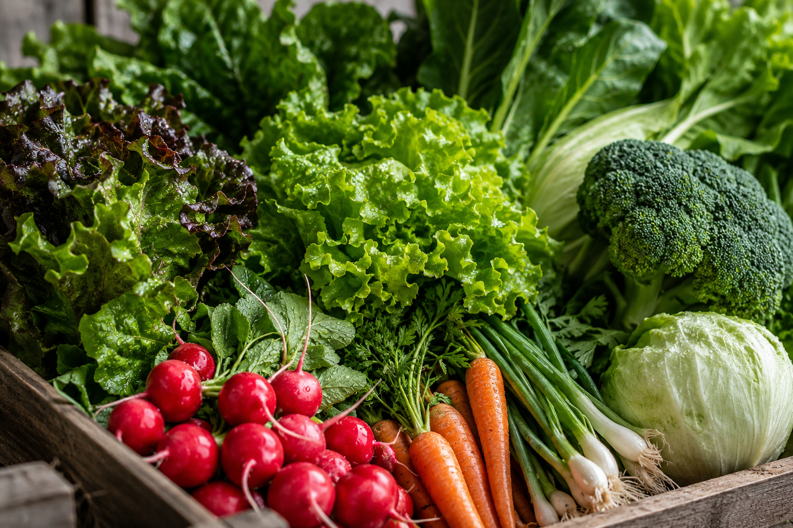

A Jogi cultiva hortaliças, legumes e temperos com atenção em cada etapa, colheita no tempo ideal e entrega rápida para você receber mais sabor, mais qualidade e muito mais frescor.

Colhidas diariamente para manter o frescor, a textura e o sabor que fazem diferença na sua mesa.
As verduras são uma escolha prática para quem quer mais leveza, mais sabor e mais qualidade nas refeições do dia a dia.
Nosso cultivo respeita o tempo certo de cada planta, com adubação orgânica, irrigação controlada e cuidado em cada etapa.
Perfeitas para saladas, sucos, refogados, recheios e receitas simples que pedem frescor de verdade.
Fazer pedidoHá mais de 15 anos a Jogi cultiva a terra em pequena escala com cuidado grande: adubo orgânico, colheita no ponto certo e zero agrotóxico. Cada maço de alface e cada pé de cenoura passa pelas mesmas mãos que plantaram a semente.